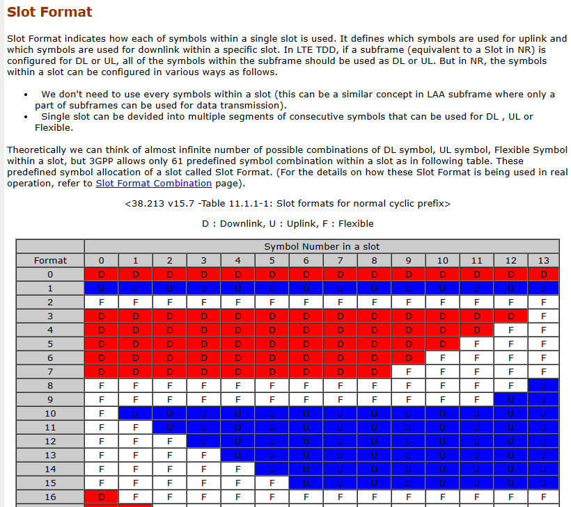

Cellular systems - 5G and beyond Part 1¶
约 553 个字 2 张图片 预计阅读时间 2 分钟
Stefan Parkval, IEEE fellow, Sernior Expert Ericsson Research¶
About Lecturer
Also one of the authors of

Info
Grimeton:
One of the earlist long-wave radio transmitters in Sweden, world heritage, with 127m-high, 1.9km-long antenna.
1.Intro¶
mobile broadband started since 4G
5G - beyond smartphones
6G - intelligient communication erver-presenting
2.Cellular netwrok¶
2 basic factor: coverage, mobility
2.1 Spectrum¶
lower bands(sub6): reasonable bandwidth(20 MHz or so), good coverage, typically fdd
higer bands: wide bandwidth(100MHz or so) -> high data rates, coverage (bad pathloss, beamforming crucial), typically tdd
NR 3GHz ~ 30GHz
why high frequency TDD?
most important: regulations,
historical reasons,
technically:
-
UL/DL switch require guard time, in low frequency, guardtime is too long;
-
high frequency, seperation of adjacent frequency is harder. TDD does not have that problem.
licensed and unlicensed
2.2 Cellular¶
-
inter-site distance:
100-300m dense urban
~ kms rural
-
power:
dl 20~200W macro, < 1W indoor
ul 200 mW
reuse 1: ICI
ICI in TDD
DL to UL, UL to DL ICI
solution: synchronization ( <3 micro seconds, \(\mu s\))
There is guard period to tolerate synchronization shift
-
Intersting problem: how about in numerology 6?
in this case, the cell is much smaller, and beamforming existing, naturally canceling a large part of ICI
2.3 LTE waveform and frame structure¶
dl: plain OFDM
ul: DFT-precoded OFDM, to reduce PAPR (Peak-to-Average Power Ratio)
1 subframe consists of 14 symbols (multipath delay shift<4.7ms is ok )
2.4 Channel-dependent scheduling¶
-
circuit-switched / packet switched (now)
-
scheduling: schedule each subframe(1ms): whom? what rate? rate adaptations.
Basic idea:
in time: transmit fading peaks
in time-freq: 2D peak
-
how to schedule?
dl: UEs report CSI (10ms), and data amount
ul: scheduling request, indicating data presence, then BS requests buffer status and so on, and schedule RBs
2.5 Error¶
not due to congestion, but fading
“hide” error from TCP
HARQ in MAC, and ARQ in RLC
retransmission scheduled a few ms later, use outband (PUSCH?)
2.6 Battery lifetime¶
radio is power consuming
RRC_IDLE, RRC_INACTIVE(NR only, with RRC context, coreNet connection, but no data transfoer ), RRC_Conected. In 5G, RRC_Inactive is used to reduce frequent signalling.
2.7 Connection¶
RRC_IDLE -> cell search
scan for synchronization signals (PSS and SSS, every 5ms in 4G, good self-correlated sequence)
once found, get sync-ed, know the start of frames, read systems informations (cell ID)
in 5G, synchronizaiotn signal interval increased to 20ms, for power efficency (part of commercial reason)
once connect, random access, preamble transmission -> random access response
2.8 Mobility¶
connected state mobility: network decides, network knows UE’s cell
idle state mobility: UE determines, BS does not know UE’s location cell
3. LTE evolusion¶
Rel-8/9 ~ Rel-15, but stopped now, switched to 5G/6G
-
CA is the most useful feature introduced in 4G
- exploitation of fragmented specturm
- higher data rate
-
Licence assist comm: aggregate liscensed and unlicenced, listen before talk on unlicenced
About IoT
mMTC, cat-M and NB-IoT
-
mMTC (massive Machine-Type Communication)
A service category in 5G that enables the connection of a vast number of IoT devices with low power consumption and sporadic small data transmissions. NB - IoT is a part of 5G, while NB-IoT is a part of 4G.
-
Cat-M (Category M, or LTE-M)
A 4G LTE-based technology optimized for IoT.
Supports higher data rates (up to ~1 Mbps) and mobility compared to NB-IoT.
Allows voice support (VoLTE)
-
NB-IoT (Narrowband IoT)
A low-power wide-area technology designed for deep indoor coverage and long battery life.
Supports very low data rates (~100 kbps or less), making it ideal for applications like smart meters, environmental monitoring, and industrial sensors.
Operates in licensed LTE spectrum but does not support handovers or voice services.
4. 5G NR¶
- ultra-lean design: reduce control overheads
- wide spectrum
- multi-antenna
- low lattency
-
forward compatibility (good job, 6G based on 5G)
-
LTE-NR coexistence
-
Network slicing (service-based slicing)
slice happens in coreNet, basically assign a slice ID to each packet/session(and deploy different schedule policies)
interesting: 5G SA core is required to support this feature, but NSA is first released, so some operators choosed NSA to reduce coreNet cost instead of choosing SA and having more 5G capabilities.
-
modular architecture: DU/CU, CP(anel)/UP
-
Dynamic TDD:
slot format

consideration: since not full synchronized, inteference matters
macro: semi-static, reduce ici
small cell: dynamic, more free without serious ici
-
multianntenna
common toolbox
-
beamforming (spatial filter)
challening to point in the right dir, also challenging when moving fast
FR1: digital beamforming, across arbitary bandwidth
FR2: Hybrid (数模混合波束赋形), more limitation in frequency
-
Ericsson spectrum sharing
for introducing 5G in 4G, smooth network migration
books 5G/5G-advanced…